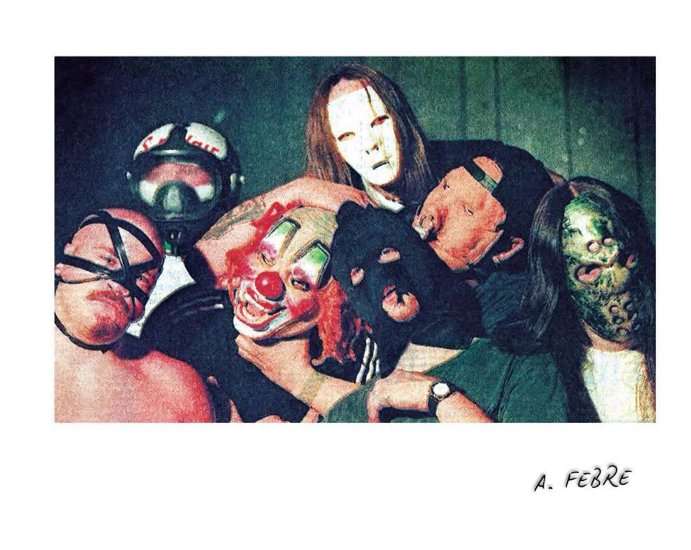
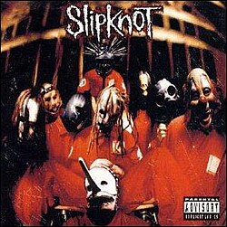
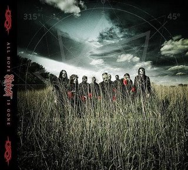
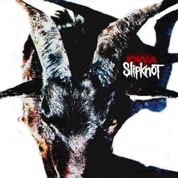

Origens: O grupo começou com o nome The Pale Ones, fundado pelo percussionista Shawn Crahan, o baixista Paul Gray, o vocalista Anders Colsefini e o guitarrista Donnie Steele. Logo depois, o baterista Joey Jordison entrou, assumindo as baquetas e deslocando Crahan para a percussão.
Identidade e Mudança de Nome: Após o primeiro show sob o nome Meld, Jordison sugeriu rebatizar o grupo como Slipknot (inspirado em uma de suas músicas). Nessa época, adotaram a estética de "anti-imagem", passando a usar máscaras e uniformes industriais numerados de 0 a 8.
Primeira Demo e Corey Taylor: Em 1996, lançaram de forma independente a demo Mate. Feed. Kill. Repeat.. Buscando um vocalista com maior alcance melódico aliado à agressividade, contrataram Corey Taylor (da banda local Stone Sour) em 1997, o que levou à saída de Colsefini pouco tempo depois.

Estreia Explosiva (Slipknot, 1999): Produzido por Ross Robinson e lançado pela Roadrunner Records, o álbum de estreia impulsionou a banda rapidamente através de turnês intensas (como o Ozzfest) e do boca a boca. Tornou-se o primeiro disco da gravadora a atingir certificação de platina.
Brutalidade em Iowa (2001): O segundo disco mergulhou em temas ainda mais sombrios e pesados, refletindo os problemas internos, o abuso de substâncias e a pressão da fama enfrentados pelos integrantes. Estreou em 3º lugar na Billboard 200 e em 1º no Reino Unido.
Experimentação e Grammy (2004–2008): Após um hiato focado em projetos paralelos, lançaram Vol. 3: (The Subliminal Verses) (2004), produzido por Rick Rubin, que trouxe melodias mais acessíveis e músicas acústicas, rendendo à banda seu primeiro prêmio Grammy (pela faixa "Before I Forget"). Em 2008, All Hope Is Gone tornou-se o primeiro álbum do grupo a estrear no topo da Billboard 200.



A Morte de Paul Gray (2010):Em maio de 2010, o baixista e cofundador Paul Gray morreu devido a uma overdose acidental, abalando profundamente a banda. O grupo retornou aos palcos em 2011 com o ex-guitarrista Donnie Steele tocando baixo nos bastidores, e criou seu próprio festival itinerante, o Knotfest, em 2012.
Saída de Joey Jordison e .5: The Gray Chapter (2013–2016):No final de 2013, o baterista Joey Jordison foi dispensado da banda (posteriormente revelou-se que ele sofria de mielite transversa, uma condição neurológica; Jordison faleceu em 2021). Para o álbum .5: The Gray Chapter (2014) — dedicado a Paul Gray — entraram o baixista Alessandro Venturella e o baterista Jay Weinberg.
Reformulação Contínua (2019–2026):O percussionista Chris Fehn deixou o grupo em 2019 após disputas judiciais sobre finanças, sendo substituído por Michael Pfaff ("Tortilla Man") antes do lançamento de We Are Not Your Kind (2019). Após The End, So Far (2022) — último disco pela Roadrunner Records — a banda passou por uma grande renovação: o sampler Craig Jones e o baterista Jay Weinberg saíram em 2023, abrindo espaço para a entrada do baterista brasileiro Eloy Casagrande em 2024 durante a turnê de 25 anos do primeiro álbum. Em 2026, o DJ Sid Wilson também deixou a formação após atritos internos, deixando Shawn Crahan como o único integrante fundador remanescente na banda.